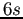
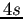
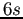
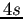
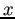
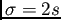
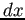
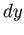
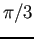
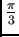

Asignación de la orientación
Para definir la orientación, primeramente se calculan las respuestas con los filtros presentados en la Fig. 2.10 sobre un área circular de radio alrededor del punto clave, siendo  la escala en que se detectó el punto. Tanto el muestreo como el tamaño de los filtros son dependientes de la escala y se establecen a y  respectivamente (a mayor escala, mayor es la dimensión de las wavelets). La evaluación de los filtros realizada aquÃ, se vale nuevamente de las imágenes integrales para realizar los cálculos más rápidamente. Tras el cálculo de las respuestas, las mismas son ponderadas con una gaussiana de valor  centrada en el punto clave.
la escala en que se detectó el punto. Tanto el muestreo como el tamaño de los filtros son dependientes de la escala y se establecen a y  respectivamente (a mayor escala, mayor es la dimensión de las wavelets). La evaluación de los filtros realizada aquÃ, se vale nuevamente de las imágenes integrales para realizar los cálculos más rápidamente. Tras el cálculo de las respuestas, las mismas son ponderadas con una gaussiana de valor  centrada en el punto clave.
Figura 2.10:
Filtros Wavelets Haar para calcular las respuestas en la dirección fig:simplekernels1 e  fig:simplekernels2.
|
[]

[]
|
Luego, las respuestas son representadas como puntos en el espacio (respuestas horizontales a lo largo del eje de abscisas y verticales  en el de ordenadas) y la orientación dominante se determina mediante la suma de todas las respuestas en una ventana deslizante orientada de tamaño , como puede observarse en la Fig. 2.11. AsÃ, las respuestas horizontales y verticales dentro de la ventana son sumadas constituyendo un vector de orientación local. La orientación final para el punto clave, es aquella en la que el vector resulta ser el más largo entre todas las ventanas.
Figura:
Asignación de la orientación para un punto clave con una ventana deslizante orientada de tamaño
. (Figura tomada de (4)).
|

|
christian
2014-01-31